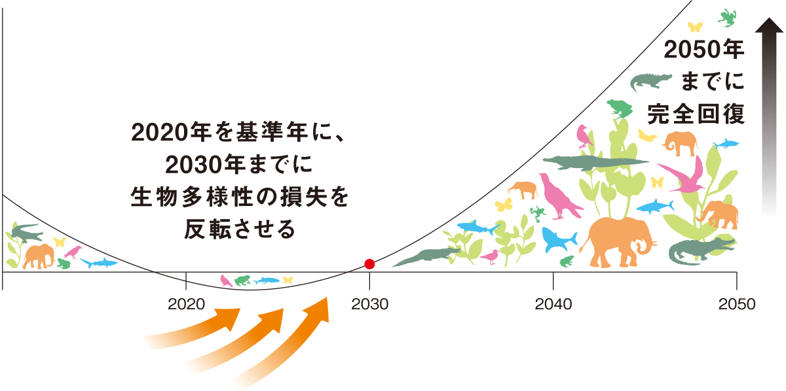

アーバンネイチャー北九州とは？
アーバンネイチャー北九州とは、北九州市の特徴である「都市と近接した豊かな自然」を表す言葉です。
北九州市は、市街地と豊かな自然が近接した全国でも特色ある都市です。鉄鋼・化学工業の街として発展してきた一方で、市域面積の約4割を森林が占め、響灘・周防灘・関門海峡の3つの海に囲まれるなど、豊かな自然環境に恵まれています。
このような「都市と近接した豊かな自然」を「アーバンネイチャー北九州」と名付け、都市と自然が近接する北九州市ならではの強みを活かし、世界目標「ネイチャーポジティブ」を市民・企業とともに実現することを目指しています。
北九州市は、市街地と豊かな自然が近接した全国でも特色ある都市です。鉄鋼・化学工業の街として発展してきた一方で、市域面積の約4割を森林が占め、響灘・周防灘・関門海峡の3つの海に囲まれるなど、豊かな自然環境に恵まれています。
このような「都市と近接した豊かな自然」を「アーバンネイチャー北九州」と名付け、都市と自然が近接する北九州市ならではの強みを活かし、世界目標「ネイチャーポジティブ」を市民・企業とともに実現することを目指しています。

「北九州市が誇る、都市に近接する豊かな自然を『アーバンネイチャー北九州』と定義し、『都市と自然の共生』というネイチャーポジティブのグローバルモデルとなることを目指します。」北九州市長 武内 和久｜出典：北九州市生物多様性戦略 2025-2030（令和7年5月）
ネイチャーポジティブとは？
ネイチャーポジティブとは、2022年12月に採択された「昆明・モントリオール生物多様性枠組（COP15）」で掲げられた世界共通の目標です。「自然の損失を止め、回復の軌道に乗せる」ことを意味し、2030年までに生物多様性の減少傾向を反転させることを目指しています。単に自然を守るだけでなく、自然をより豊かにしていく考え方であり、企業、行政、市民を含む社会全体に積極的な行動が求められています。

世界的背景
なぜ今、ネイチャーポジティブが必要なのか
73%
過去50年で野生生物が減少
生物多様性の危機
世界の野生生物の個体群は過去50年間で平均73%減少しています（WWF「生きている地球レポート2024」）。生息地の破壊・汚染・外来種・気候変動が重なり、今この瞬間も多くの種が地球上から失われ続けています。
100〜1,000倍
自然状態と比べた絶滅スピード
第6の大量絶滅
現在の種の絶滅スピードは自然状態の約100〜1,000倍。隕石衝突や火山噴火が原因だった過去5度の大量絶滅と異なり、今回は人間活動が原因という点で前例のない危機です。食料・水・気候・健康など私たちの生活基盤に直結します。
北九州市生物多様性戦略 2025–2030
北九州市では、「北九州市生物多様性戦略2025-2030」に基づき、生物多様性の保全と回復を通じてネイチャーポジティブの実現を目指しています。
「都市と近接した豊かな自然」＝「アーバンネイチャー北九州」という北九州市ならではの特徴を生かし、人と自然が共生する持続可能なまちづくりに、市民、企業、教育・研究機関、行政など多様な主体が連携しながら取り組みます。
この取組を推進する中核組織として「北九州ネイチャーポジティブセンター」と「北九州ネイチャーポジティブネットワーク」を構築しました。
さらに詳しく知る
アーバンネイチャー北九州を構成する2つの重要テーマ